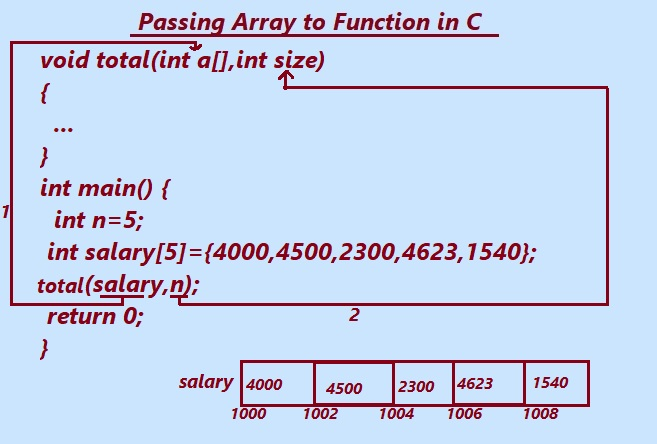

In this article, let learn about how we will pass array to C function and returns an array from functions in C using several different method.
Array: An Array is a collection or group of similar data types(values) which are stored in contiguous memory memory block.
Multi-dimensional array also stored as contiguous block of data in the systems memory.
In C language there is several requirement and situation where programmer required to pass array to function argument instead as individual elements.
For e.g Let say we have requirement to add list of numbers, then it is more convenient to pass numbers as an array to function instead passing them as scaler variable.
user does not have the fixed number of element or scaler value to send a function.
since the number of elements is not fixed and passing numbers as an array will allow to function to work for any number of elements or values.
Array can be passed to a function as by two ways . In this tutorial page, we will learn how to pass the array to a function using
1. call by reference and
2.call by value methods.
Passing an array to Function in C

1. Fig. Shows Passing array to function as reference or base address.
The fig shows how array is declared and passed to the function.
The array variable salary has declared as integer and initialized to 5 elements.
Next the statement total(salary,n) is the calling function which in turn calls the function total() declared and defined above.
The base address of salary array and size 5 is passed to the function total().
Then the function void total(int a[],int size)
{
.....
.....
}
executes.
The body of function total() is to be developed as per the requirement.
Note:Entire array can not be passed at a time to the function.Reference or base address is suficient in array to pass all array elements in the function.
1. C program to pass array to Function as refernce.
The following example given is a simple implementation of passing as reference array to function.
#include <stdio.h>
void total(int a[],int size)
{
int i=0,tot=0;
printf("\n Array Elements");
for(i=0;i<size;i++)
{
printf("\n %d",a[i]);
tot=tot+a[i];
}
printf("\n Sum of array elements=%d",tot);
}
int main()
{
int n=5;
int salary[]={4000,4500,2300,4623,1540};
total(salary,n);
return(0);
}
Output:
Array Elements:
4000
4500
2300
4623
1540
Sum of array elements=16693.
Explanation:In the given program above we have declared and defined the function total(int a[],int size) .which accepts entire array and size as argument.The Function displays the array elements,calculates the total of array elements and finally displays the sum of array elements.
1. int n=5;
n is the integer variable which is assigned a value 5 and has been used as the total size of an array.
int salary[]={4000,4500,2300,4623,1540};
The salary has been declared as int array variable. The five different unique salaries has been assigned to salary array.
2. total(salary,n);
the statement above given calls the total() function.
The parameters salary(as reference) and n as size are passed to the function.
The function total() is executes and calculates the result.
void total(int a[],int size)
{
int i=0,tot=0;
printf("\n Array Elements");
for(i=0;i<size;i++)
{
printf("\n %d",a[i]);
tot=tot+a[i];
}
printf("\n Sum of array elements=%d",tot);
}
The function total() now have all the array element and the size.
Next the the printf("\n Array Elements"); displays the "Array Elements" on the console.
for(i=0;i<size;i++)
{
printf("\n %d",a[i]);
tot=tot+a[i];
}
The loop given above displays all array element on console and sums those array elements and store them in tot variable.
and finally the "printf("\n Sum of array elements=%d",tot);"
function shows the output "Sum of array elements=16693"
Passing array to function as call by value method.
Passing the actual value of variable into function is known as "Passing by value" .
The compiler copies the value of an actual argument in a local variable When we use pass by value.
The parameters in the called or local function are initialized with the value of the passed arguments.
2. C program to pass array to Function as value.
In the following example, the main () function passes individual values of array to the show(). The function show() receives copies of these variables values and accesses them by the identifier p. The function show() modifies the value of p. When control passes back to main(), the actual values of a[] are not changed.
/*
This example illustrates calling a function by array values
*/
#include <stdio.h>
void show (int p)
{
p += 5;
printf("In add function, p = %d \n", p);
}
int main(void)
{
int a[5] ={12,34,54,21,43},i;
for(i=0;i<5;i++)
{
show(a[i]);
printf("In main function, a = %d ", a[i]);
}
return 0;
}
Previous Topic:-->> Recursion Functions in C || Next topic:-->>Scope,visibility and Life time of variable.
Other Topics:
Variables and Identifiers
Relational Operators
if-else statements
Switch case
While Loop
Infinite while Loops
C FOR Loop
Infinite for Loops
Continue in Loops
One Dimensional Array
Two Dimensional Arrays
Read and Display 2D Arrays
Types of functions
Passing Array To Functions
Nesting of Function
Array vs Structure
Array of Structure
Structures and Functions
Structures Within Structures
Use Of Pointers In C
File Handling In C
Loops FAQ
Arrays FAQ
count vowels in a file
Function FAQ
Conditional Statements Assignments
For Loops Assignments
Arrays Assignments
Function Assignments
Structure Assignments
Pointers Assignments
Files Assignments
Storage classes Assignments
Binary Files
count words,lines in a file
Copy files
Update File
Continue in Loops
break in Loops
Difference Between While and Do while
difference while do..while & for
malloc
calloc
Storage Classes
Operators MCQ
Conditional Statements MCQ
Loops MCQ
Arrays MCQ
Function MCQ
Structure MCQ
Pointers MCQ
Files MCQ
Storage classes MCQ